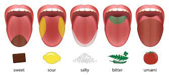
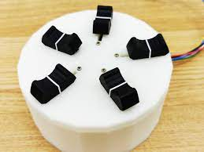
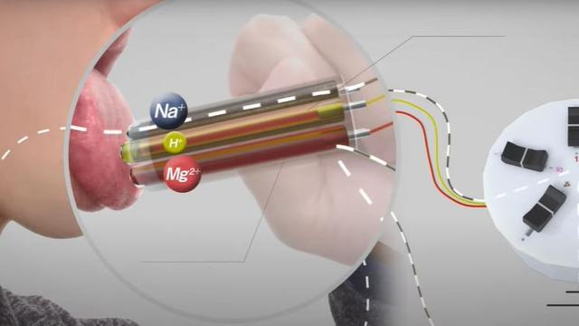

THE NORIMAKI SYNTHESIZER
Taste Display
Electromagnetic gels with varying flavors are used in the Norimaki Synthesizer. Many scientists think that there are six flavors that combine to create all flavors. Salty, Sweet, Acidic, Bitter, and Umami or Meaty/Savory are the tastes. The way this machine works is that it has six distinct flavors, and based on what you want to recreate, it will subtract the different flavors. According to Miyashita, it may be used to make almost any flavor. Many writers believe that this could be the thing to set the way for the future. Thats not how all feel though, as I recall one writer said in an anonymous pull "This is against evolution."